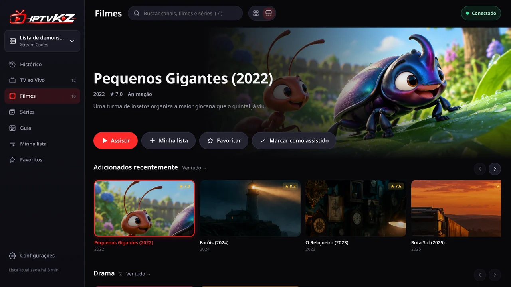

Novo
Visualização Streaming
Um destaque grande no topo mostra cada filme ou série em detalhe: imagem ampla, sinopse, nota e os botões para assistir, salvar ou favoritar. Abaixo, fileiras de cards, como nos apps de streaming.
Prefere a grade de sempre? Troque entre Clássica e Streaming ao lado da busca, em cada aparelho.
Leve de verdade. Feito para abrir rápido no seu aparelho, até em TVs mais antigas: interface sem frameworks pesados e nada de conversão de vídeo no dispositivo.
